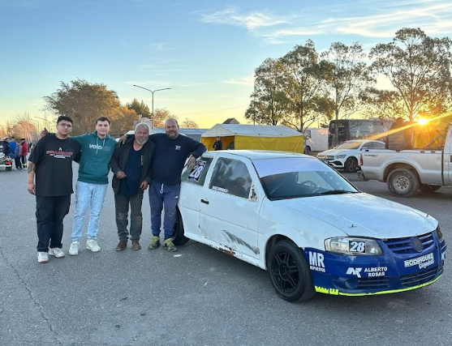

Nicolás Rodríguez: "Vamos a tratar de mejorar lo que hicimos en Trelew"

La última presentación del TP Gol 1.6 dejó un desafío inesperado para Nicolás Rodríguez y todo su equipo. Después del fuerte golpe sufrido durante los entrenamientos en Trelew y del enorme esfuerzo realizado para volver a pista ese mismo fin de semana, el piloto ya piensa en la próxima fecha del campeonato y en seguir evolucionando junto al auto que utilizará nuevamente en Comodoro Rivadavia.
Rodríguez confirmó que este fin de semana volverá a competir con el mismo auto que le fue prestado por la familia Vales tras el accidente sufrido en la fecha anterior, una situación que obligó al equipo a reorganizarse rápidamente para poder continuar dentro de la categoría.
"Vamos a ir con el mismo auto que nos prestó la familia Vales, el mismo auto que armamos el viernes a la noche en Trelew", explicó.
Desde aquella carrera, el trabajo no se detuvo. El piloto señaló que gran parte de estas semanas estuvieron destinadas a poner en condiciones el vehículo, teniendo en cuenta que se trata de un auto que llevaba varios años sin actividad.
"Estuvimos prácticamente todas las semanas trabajando con el chasis y acomodando muchas cosas para llegar de la mejor manera posible", comentó.
Además, destacó el esfuerzo realizado por todo el equipo para dejar el auto listo de cara a esta nueva presentación, incluyendo el trabajo realizado en distintos aspectos mecánicos y estéticos durante las últimas semanas.
Más allá de las dificultades, Nicolás aseguró que las expectativas son positivas y que el objetivo principal será seguir evolucionando durante el fin de semana.
"La expectativa es llegar y tratar de mejorar lo que fue Trelew", afirmó.
Pensando en el futuro, Rodríguez adelantó que el equipo continuará utilizando el auto prestado mientras trabaja en un proyecto a largo plazo: la construcción de una nueva unidad propia.
"La idea es seguir con este auto hasta que podamos terminar uno nuevo. Va a costar muchísimo, pero nada es imposible", señaló.
Sobre la fecha doble que se disputará este fin de semana en el autódromo General San Martín de Comodoro Rivadavia, el piloto remarcó que el nivel del TP Gol 1.6 obliga a trabajar constantemente para mantenerse competitivo, aunque se mostró confiado en poder dar un paso adelante respecto a la presentación anterior.
Al momento de los agradecimientos, Rodríguez recordó especialmente el apoyo recibido luego del accidente sufrido en Trelew y valoró el enorme esfuerzo realizado por familiares, amigos, colaboradores y sponsors para que el auto pudiera volver a pista.
"Fueron entre diez y quince personas trabajando toda una noche sin dormir para que el auto pudiera correr", destacó.
También tuvo palabras de reconocimiento para su padre, su abuelo y sus amigos más cercanos, quienes acompañaron al equipo durante todo el proceso para poder volver a competir.
Este fin de semana el TP Gol 1.6 volverá a acelerar en Comodoro Rivadavia con una nueva fecha del campeonato, donde Nicolás Rodríguez buscará seguir sumando experiencia, continuar desarrollando el auto y dar otro paso adelante dentro de una de las categorías más competitivas del automovilismo zonal.